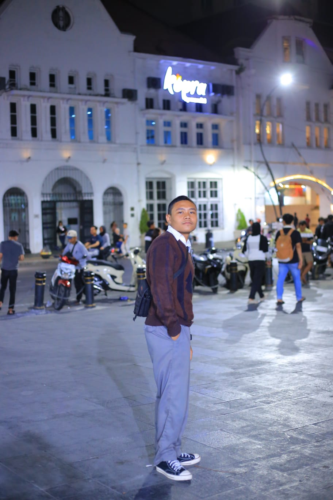

Aku belajar web development dari nol dan membangun satu project kecil demi satu. Semua project di bawah sudah online dan bisa langsung dicoba.
SCROLL ↓

DEVELOPER
Web Developing
“Berusahalah terus, terus walaupun tumbang, tujuan mu tetep di 1 mata. Don't give up!”
Tertarik berkolaborasi, magang, atau sekadar ngobrol soal coding dan anime? Hubungi aku.